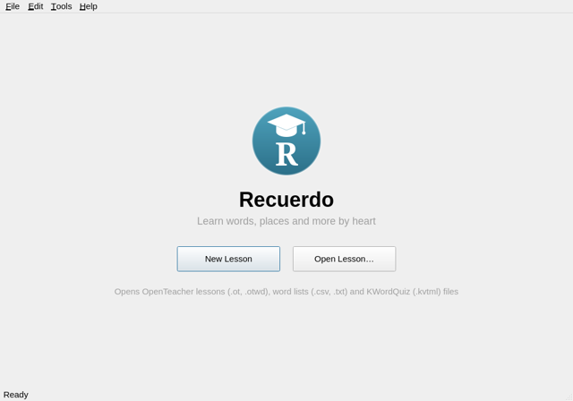
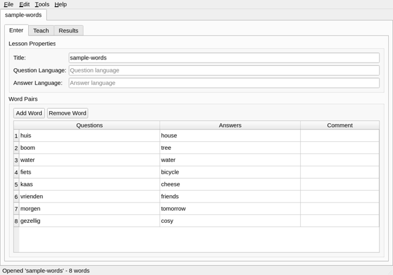
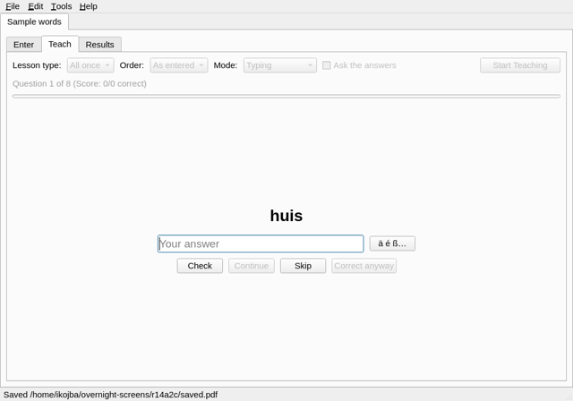
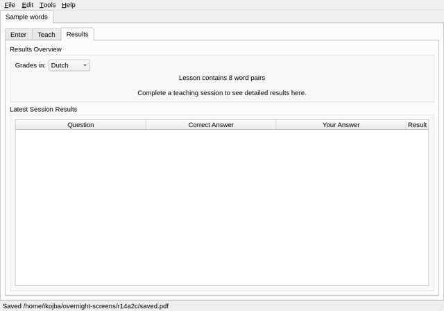

This short guide shows a first practice session: we learn some Dutch words. It is the same on Linux, Windows and macOS.
Start Recuerdo and click New Lesson to make a word list, or Open Lesson… to open one you have: Recuerdo opens OpenTeacher lessons, word lists in CSV or text files and the files of many other vocabulary programs.

On the Enter tab, give the list a title and the two languages, and type the words: a question and its answer on each row. Separate alternative answers with a semicolon, e.g. cat; puss.

On the Teach tab, choose how to practise (the defaults are fine) and click Start Teaching. Type the answer to each word and press Enter or click Check. If you were wrong, Recuerdo shows the right answer; Skip asks the word again later.

When you are done, the Results tab shows how you did, with a grade in the notation you choose.

Save your list with File > Save. OpenTeaching Words (.otwd) keeps everything, including your results; you can also save for other programs, or as PDF to print.
Recuerdo is based on OpenTeacher; this guide follows OpenTeacher's quick start.